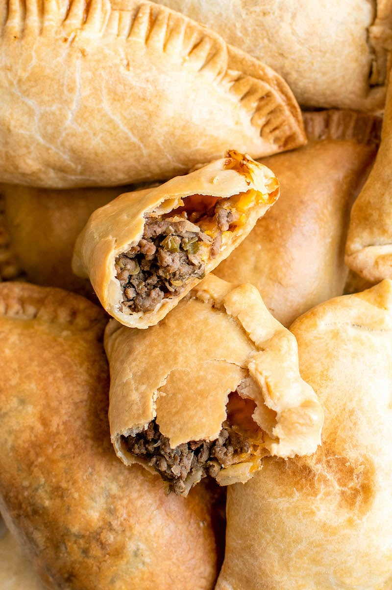

Easy Beef Empanadas

Description
Empanadas are essentially the savory Latin-American version of a turnover.
Traditional recipes often instruct the cook to stuff a pastry crust (often made with
masa or corn flour) with a ground or shredded meat filling, but we decided to pass
on all the work required to make the pastry and used store-bought pie dough instead,
for empanadas with a light and flaky crust. For the filling, ground beef and
melt-worthy Monterey Jack cheese were a must, and for flavor and spice we tried
everything from tomato paste to Ro-tel tomatoes, which are flavored with chiles.
In the end, we settled on jarred salsa plus a few cloves of garlic, which gave us
chunky, tender tomatoes, a bit of spice, and an aromatic backbone. You will use both
rounds of pie dough in the package and cut them in half to yield 4 empanandas.
Ingredients
- 1lb 85% lean ground beef
- 1 cup jarred chunky tomato salsa
- 4 garlic cloves
- Fresh cilantro
- 1 cup (4oz) shredded Monterey jack cheese
- 1 package store-bought pie dough
Steps
-
Adjust oven rack to middle position and heat oven to 450 degrees. Line rimmed
baking sheet with parchment paper.
-
Cook beef and salsa together in 12-inch nonstick skillet over medium-high heat
until beef is no longer raw, about 5 minutes. Mince garlic, stir into skillet,
and cook until fragrant, about 30 seconds, then remove from heat. Mince 1/4 cup
cilantro; stir into filling with cheese. Season filling with salt and pepper to
taste; let cool slightly
-
Cut each dough round in half. Spread one-quarter of filling over 1 side of each
piece of dough, leaving 1/2-inch border around edges. Brush edges of dough with
water, fold over filling, and crimp edges to seal. Transfer to prepared sheet.
Using fork, pierce several stea vents in top of dough. Bake empanadas until hot
and golden, 15 to 20 minutes. Serve.